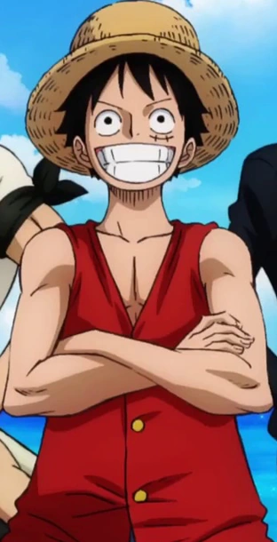

|  | Name | Monkey D. Luffy |
|---|---|
| Anime title | One Piece |
| Created by | Eiichiro Oda |
| Voice Actor | Mayumi Tanaka |
| Genre | Adventure,Fantasy,Action,Drama |
| Born | May 5 |
| Occupation | Pirate(captain) |
| Current Age | 19 |
| Alias | Mugiwara(straw hat) |
| Devil Fruit | Gomu Gomu No Mi(Rubber Fruit) |
| Current Bounty | 3000000000 |
Luffy is portrayed as a carefree, fun loving, happy-go-lucky character with great ambition and a huge appetite, often thinking with his stomach and comically gorging himself. Optimistic[27] and generally good-hearted, he is not as dimwitted as many believe him to be, and he often demonstrates more understanding than the other characters expect. Knowing the danger ahead, Luffy is willing to risk his life to become King of the Pirates and protect his crew. A capable and reliable captain, he never puts his crew or himself at risk out of incompetence. During the Loguetown story arc, Smoker (a navy captain at the time) says that Luffy "enjoys playing stupid"; Luffy responds with a mysterious smile. He enlists Chopper and Brook for his crew not just for their personality or appearance, but also because of his instinctive ability to read people. Luffy needs key jobs filled by his crew (cook, navigator, medic, musician, and quartermaster, filled by Sanji, Nami, Chopper, Brook, and Franky, respectively). At the beginning of the series, he said that he wanted at least ten crew members with abilities he felt necessary for his goal. Despite his carefree personality, each crew member respects him in their own way.[28][29] Luffy is rarely concerned about the consequences of his actions, doing what he feels is right in the moment, even if it leads to retaliation by a powerful force.[30] He is an extremely loyal captain, who has demonstrated throughout the series that he is willing to risk his life for the well-being of his crew.[31]
Luffy's rubberiness is a result of eating a devil fruit called Gum Gum Fruit.[32][33] It makes him immune to electric attacks and most blunt forces, also giving him the ability to stretch his body at will. He uses his elasticity to accelerate part or all of his body to deliver punches, kicks, head butts, and body checks or for propulsion. Like others exposed to Devil Fruit, Luffy cannot swim; when he is submerged in water or contacts the Sea-Prism Stone, he loses his strength and cannot move on his own. In addition to his Devil Fruit powers, he has immense strength, durability, speed, reflexes, agility, endurance and stamina. Luffy's signature attack is the Gum-Gum Pistol (ゴムゴムの銃ピストル, Gomu Gomu no Pisutoru), a punch which he learned during years of training. Another technique developed later in the series is Second Gear (ギア2セカンド, Gia Sekando), which increases his strength and speed for a short time but strains his body and can shorten his lifespan if used too long. Observing CP9's Shave (剃, Soru) technique, Luffy adapts the move to his rubber body and matches the assassins' speed. Third Gear (ギア3サード, Gia Sādo), another technique, uses air in his bones to attack but makes him shrink afterward.[34] Luffy can use both techniques simultaneously; after two years, he gains better control of the techniques and is no longer affected by their drawbacks. Luffy develops another technique, Fourth Gear (ギア4フォース, Gia Fōsu) (similar to Third Gear), inflating his muscles to increase the size of his limbs (except for his legs). He can make destructive moves by compressing and releasing his limbs, and can fly in a similar fashion to CP9's Moon Walk (月歩, Geppō) technique.[35] Later, it was revealed that the real name of Gum Gum fruit is Human-Human Fruit, Model: Nika. It is a Mythical Zoan-type Devil Fruit that its "awakening" grants the user's rubber-like body increased strength and freedom, limited only by the user's imagination. It is for this reason that the user is said to become the "embodiment of freedom", able to bring joy to the people around them and making it "the most ridiculous power in the world".[2] He also takes a completely white appearance. The World Government renamed it to erase the fruit's original name from history and reclassified it as a Paramecia in order to conceal its true nature.[2] The fruit was originally a treasure sought by the World Government for over 800 years, until it was stolen by Red-haired Shanks.[36][37] According to the Five Elders, the fruit had not been awakened for centuries prior to Luffy's having done so.[2]
Luffy has the ability to use Haki (覇気, ambition). This ability has three types: Armament Haki (武装色の覇気, Busōshoku no Haki), an armor-like force, which can amplify defense and the force of attacks and negate a Devil Fruit user's defense, allow physical contact and damage; Observation Haki (見聞色の覇気, Kenbunshoku no Haki), a sixth sense, which can read a person's moves and detect their presence; and Conquering King's Haki (覇王色の覇気, Haōshoku no Haki), which can render weak-willed people or animals near him unconscious.[38] Luffy learns all those types of Haki and uses them with his improved attacks. As a result of his encounter with Magellan, he has also developed an immunity to poison (although it is shown that a strong poison may affect him, albeit very slowly). During his fight against Charlotte Katakuri, Luffy gains a advanced form of Observation Haki (Called Future Sight) to see several seconds into the future.[39] During his time at Udon prison in Wano, Luffy gains two new advanced forms of Armament Haki. The first one is called Emission to shoot a short blast of Haki from a distance while the second one is called Internal Destruction which can also go inside his target's body or objects and destroy it from within.[40] During his fight with Kaido at the top of Onigashima, Luffy unlocks an advanced form of Conquerors Haki. It is the ability to coat his entire body with it, similar to Armament Haki, which could further enhance his attacks.[41]
| 1 | East Blue Saga |
| 2 | Alabasta Saga |
| 3 | Skyland Saga |
| 4 | Water 7 Saga |
| 5 | Thriller Bark Saga |
| 6 | Summit War Saga |
| 7 | Fish-man Island Saga |
| 8 | Dressrosa Saga |
| 9 | Four Emperors Saga |